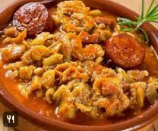
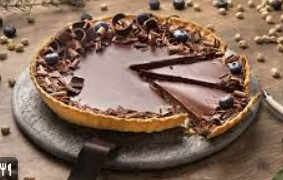
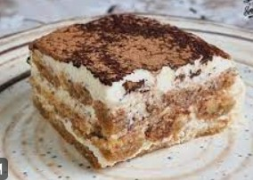

| Foto |
Nombre |
Calorias |
Pasos |
|  |
Callos a la madrileña |
810 |
- Los callos deben estar bien limpio
- Cortarlos en trozos
- Picar la cebolla y los dientes de ajo.
- Sofreir el ajo y la cebolla hasta que quede transparente.
- Los cocinaremos durante cinco minutos y luego, agregaremos las charcuterías (chorizo,
morcilla y bacon).
- Colocar los callos (panza, morro, manitas), la zanahoria y el sofrito que venimos
de preparar
- Espolvorearemos con una pizca de sal, agregaremos el pimiento choricero y la hoja
de laurel.
- Cubrir todo con agua hasta sobrepasar los sólidos con al menos un dedo de líquido
|
|  |
Tarta de chocolate |
600 |
- Mezclar el cola-cao con la mantequilla.
- Separar las yemas y mezclarlas con el azúcar.
- Unir ambas mezclas y añadir la harina.
- Montar las claras y añadirlas a la mezcla anterior mezclando siempre de arriba hacia
abajo para que no se bajen las claras.
- Untar un molde de mantequilla y espolvorear de harina.
- Precalentar el horno y hornear a 175 grados durante unos 40 min.
|
|  |
Tiramisú |
450 |
- Echar la mitad del azúcar en la nata liquida y montarla hasta que quede muy compacta.
- Separar las claras de las yemas y montarlas a punto de nieve.
- Mezclar despacio el queso y las yemas de huevo, añadiendo el resto del azúcar.
- Cuando el queso y las yemas están mezclados juntar con la nata montada y las claras
a punto de nieve y mezclar todo bien, pero despacio.
- En el café caliente disolver un tercio del chocolate y echar un chorrito de licor.
- Mojar muy ligeramente los bizcochos en el café sin dejar que se empapen y disponer
la mitad de ellos cubriendo el fondo de una fuente.
- Echar la mitad de la mezcla sobre los bizcochos cubriéndolos uniformemente.
- Poner una nueva capa de bizcochos mojados sobre la mezcla.
- Echar el resto de la mezcla sobre la segunda capa de bizcochos.
- Dejar reposar al menos 6 horas antes de servir.
|
| Número de recetas totales del recetario:4 |